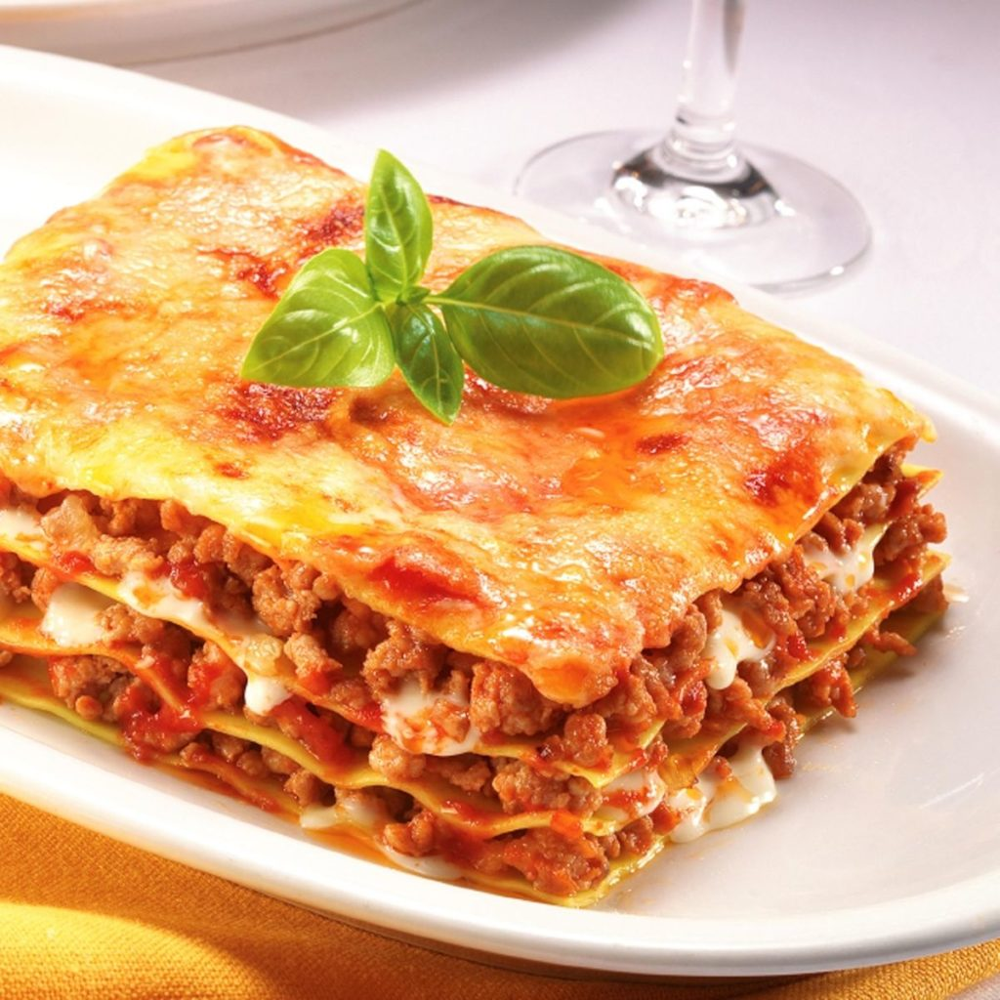

Lasagna

Classica lasagna alla bolognese
Le lasagne alla Bolognese sono un'istituzione, il piatto tipico della domenica.
Questa pietanza ricca e saporita è originaria dell'Emilia e, nello specifico, della città di Bologna.
Le lasagne però sono conosciute, apprezzate, fatte, rifatte per le feste e non solo, assaggiate e condivise non solo in tutta Italia,
ma anche all'estero proprio come piatto simbolo italiano.
Strati di pasta verde all'uovo, conditi con il classico ragù della tradizione, besciamella e formaggio grattugiato.
Ovviamente delle lasagne non mancano numerose e prelibate varianti come quella zucca e salsiccia o ai funghi,
perfette per i menu autunnali, quella ai carciofi per la stagione invernale e primaverile, oppure quella bianca, senza pomodoro.
Dalla preparazione agli ingredienti, questa ricetta è la quintessenza della "ricchezza" della cucina tradizionale bolognese,
celebre anche per molte altre ricette di pasta fresca e non solo, basti pensare allo gnocco fritto.
Non vi resta che prepararla e gustarla in compagnia della vostra famiglia per un giorno davvero speciale!
Ingredienti
Pasta sfoglia
- Semola di grano duro rimacinata 350g
- Spinaci 250g
- Tuorli 3
- Farina 00 150g
- Uova 2
Ragù
- Carne bovina (trita di manzo, macinata grossa e mista) 300g
- Pancetta 150g
- Carote 50g
- Cipolle dorate 50g
- Passata di pomodoro 300g
- Olio extravergine d'oliva 1 cucchiaio
- Pepe nero q.b.
- Sedano 50 g
- Vino rosso 100 g
- Brodo vegetale q.b.
- Sale fino q.b.
Besciamella
- Burro 70g
- Latte intero 1l
- Noce moscata q.b.
- Farina 00 70g
- Sale fino q.b.
Condimento
- Burro q.b.
- ParmigianoReggaino DOP 270g
Preparazione
- Per preparare le lasagne alla bolognese, iniziate dal ragù.
Preparate il brodo vegetale che dovrete tenere in caldo.
Poi prendete la pancetta, tagliatela prima a striscioline.
Con un coltello o una mezzaluna sminuzzatela per bene.
A parte preparate un trito fine con carote, cipolle, sedano e tenetelo da parte.
- In una casseruola versate un filo d'olio e la pancetta.
Sgranatela bene con un mestolo e lasciatela rosolare per alcuni minuti.
Aggiungete poi il trito di verdure e fate insaporire per 5-6 minuti.
Aggiungete poi la carne macinata. Mescolate e alzate la fiamma.
Lasciate rosolare la carne senza fretta,
dovrà essere ben rosolata per sigillare i succhi e risultare morbida non stopposa.
-
Sfumate con il vino rosso 7, poi aspettate che sia completamente evaporato e aggiungete la passata di pomodoro 8.
Mescolate, il ragù deve cuocere due ore. Quando ha ripreso il bollore potete aggiungete poco brodo caldo, uno o due mestoli 9.
Poi fate andare il ragù per un paio d'ore almeno.
-
Dovrete cuocere con il coperchio, senza chiudere del tutto 10. Controllate e mescolate di tanto in tanto,
al bisogno aggiungete altro brodo e lasciate cuocere per il tempo indicato. Passate adesso alla pasta.
Come prima cosa versate gli spinaci in un tegame 11, aggiungete poca acqua, coprite con un coperchio
12 e lasciate cuocere fino a che non saranno appassiti, in totale ci vorranno 5-6 minuti 13.
A questo punto scolateli, lasciateli intiepidire e strizzateli bene 14.
Trasferiteli in un mixer 15